10月03日STl图纸文件分享
efrl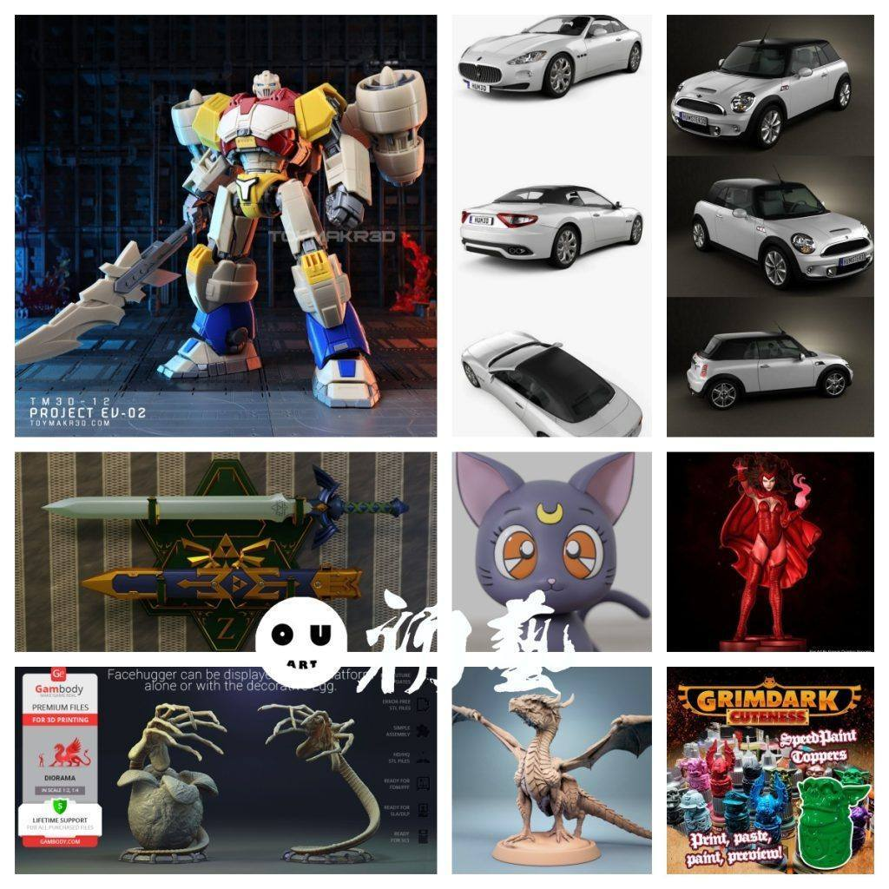
1.怪兽猎人，很帅的机甲造型。
链接：https://pan.baidu.com/s/1Wh90IzVXey6ed5vUkMn-Og
提取码：efrl
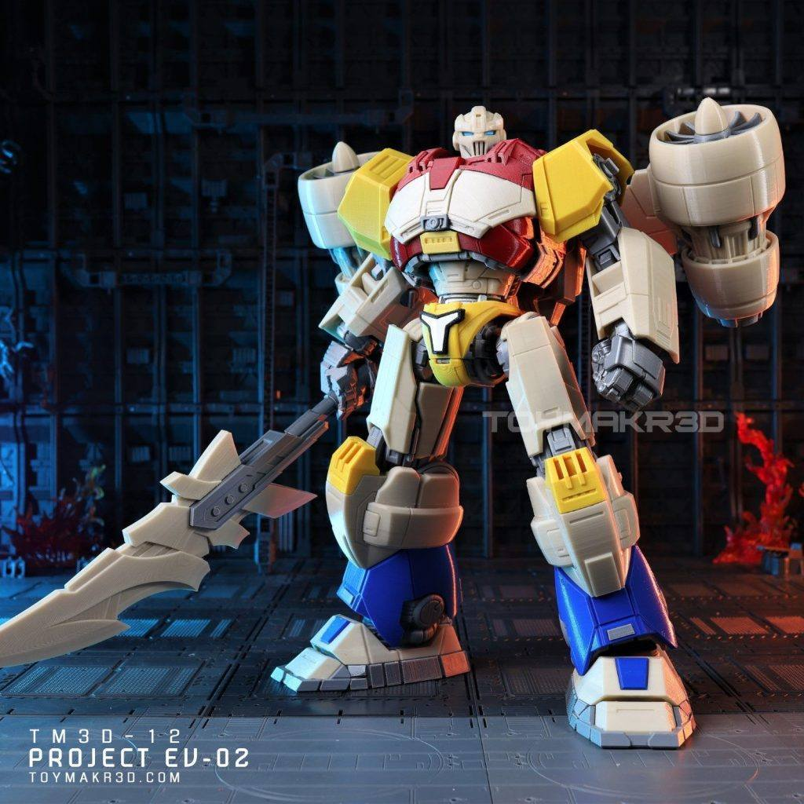
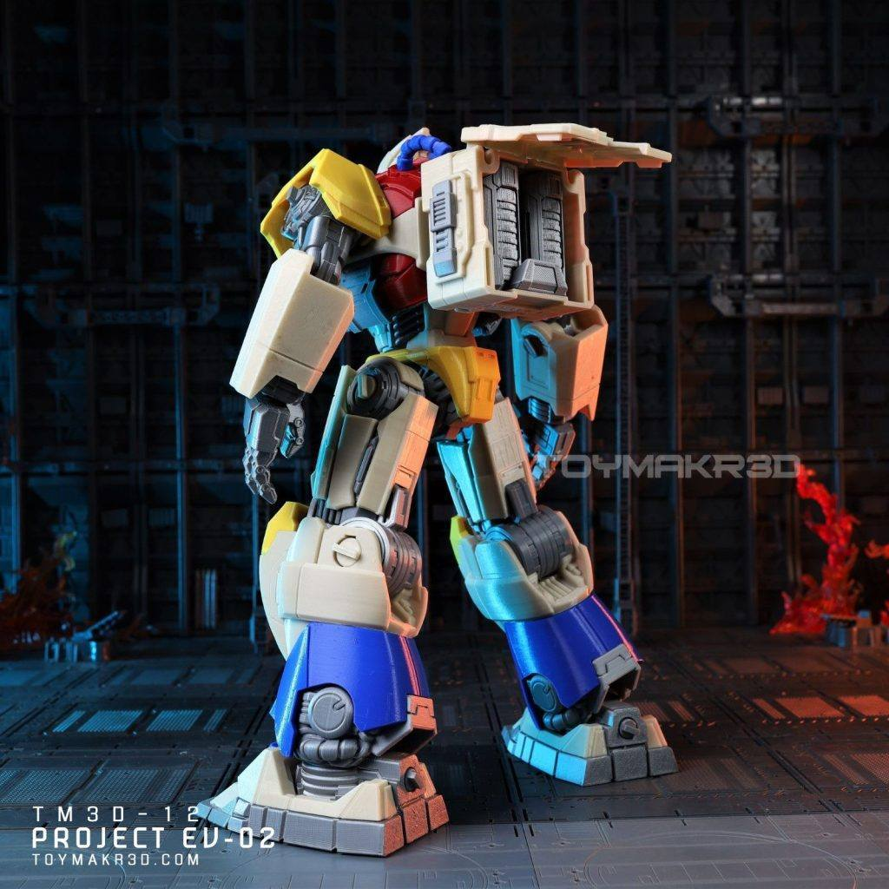
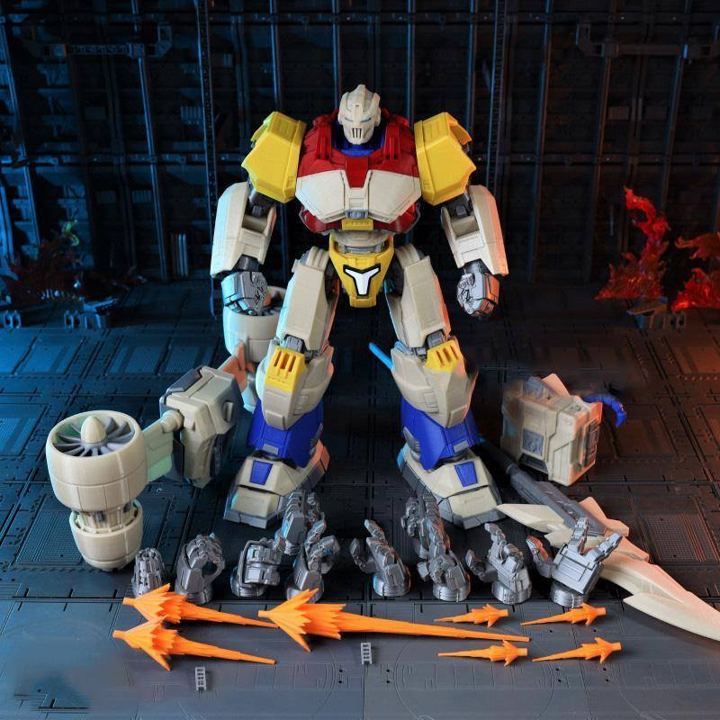

2.三辆帅小车，迷你、玛莎拉蒂、吉普，一体成型的，可用作场景，使用场景还得看个人。
迷你链接：https://pan.baidu.com/s/1H0lZ219OVasz-xmvvakK_A
提取码：6iwm
吉普链接：https://pan.baidu.com/s/1G8_P4N3jCyNqYrA8q4sz9Q
提取码：usa6
玛莎拉蒂链接：https://pan.baidu.com/s/1o_o_FRL96BSexuiu9qVynA
提取码：ki4n
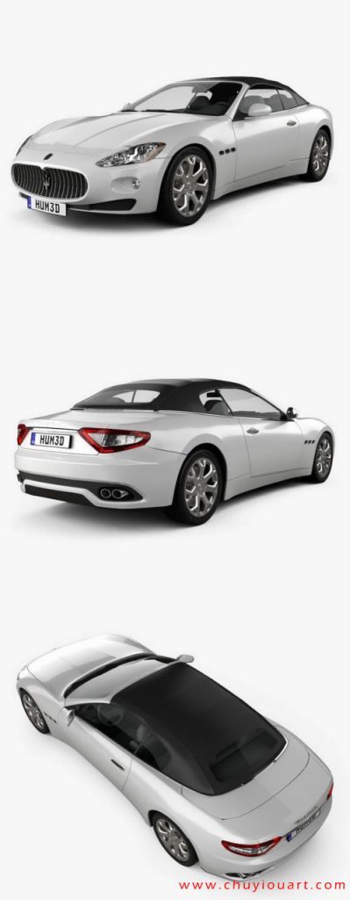
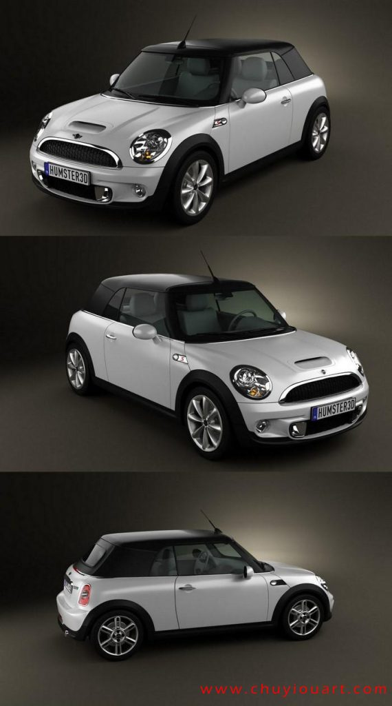

3.林克的剑，大师之剑，细节非常好，做cos或者当摆件都很好。
链接：https://pan.baidu.com/s/1HIzd4mF6SeAHMGwSMcgLpw
提取码：hoqd
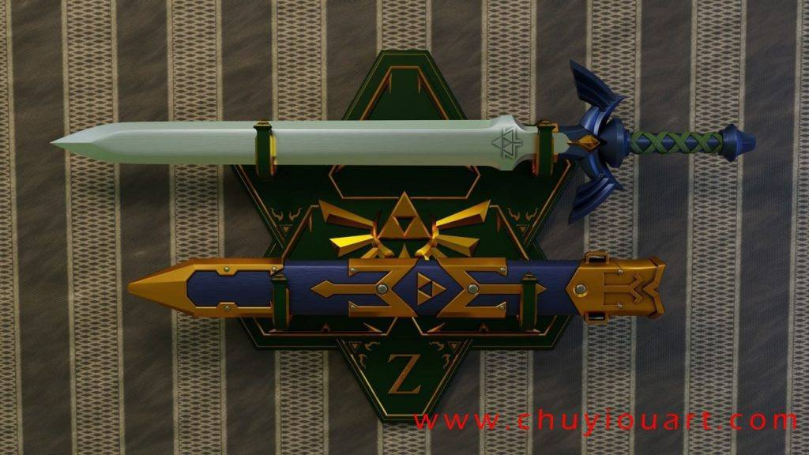

4.露娜，月野兔的猫，这种二次元涂装靠手稳不行，用合适的技法效率和效果都好。
链接：https://pan.baidu.com/s/117Z4fxyxZT4Rw-E2NWeFsA
提取码：3twp


5.旺达，高模，介于漫画和写实之间吧，细节很好。
链接：https://pan.baidu.com/s/1eFWlcKJmJ8lOSq9u1CyN4Q
提取码：n9w5
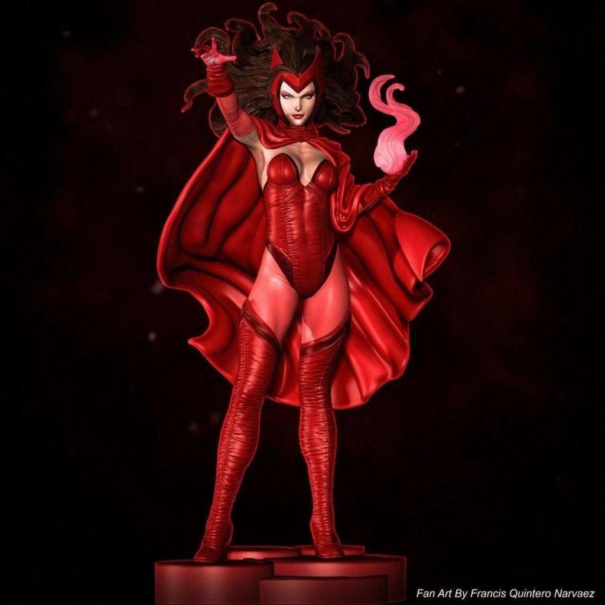

6.抱脸虫，高精模型，这个模型能用的场景很多，后面给大家做些实际的例子，即便直接打印也非常好。
链接：https://pan.baidu.com/s/1aKN19aJE4yz18CF75OsM4g
提取码：jhxz


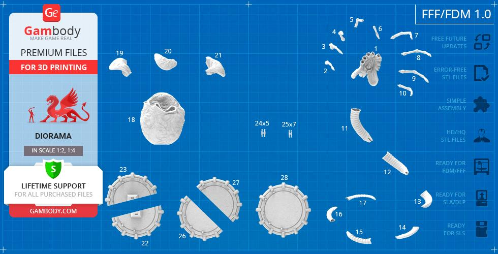

7.龙一只，这个没什么，群友求的模型，发在帖子里，大家能用自取。
链接：https://pan.baidu.com/s/1hCMgKjuvlpElBKoKB0TgLg
提取码：b6rf
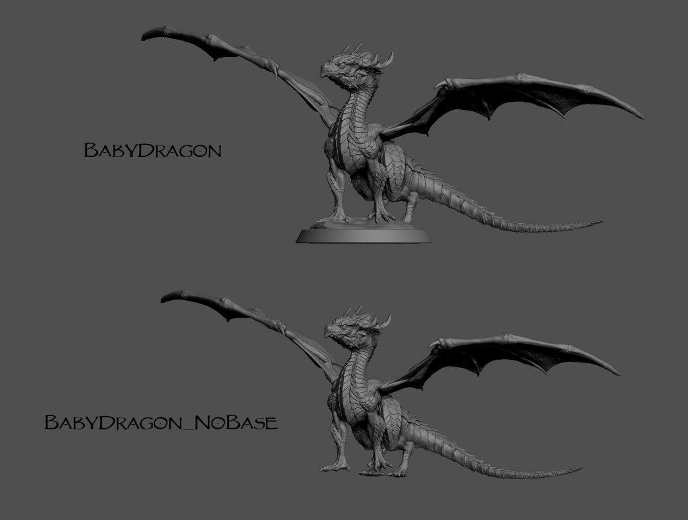


8.模型漆瓶盖，起到装饰作用，可用与漆料测试。
链接：https://pan.baidu.com/s/1mrsmdWfoBY4Q8uzk-OGXCA
提取码：6ouf
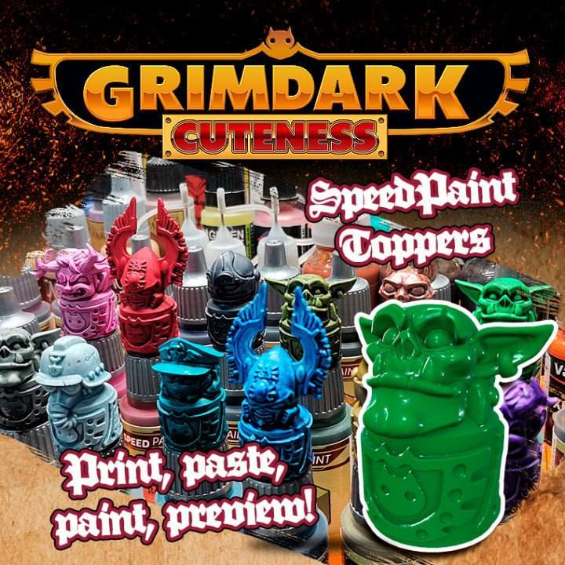
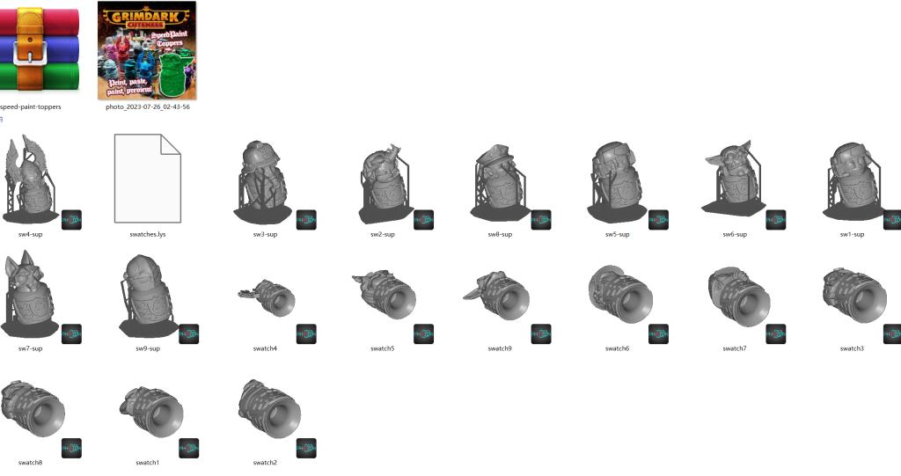
以上内容仅供个人使用（非商用）
ONLY for PERSONAL (NON-COMMERCIAL) use.
加群获得更多免费模型！